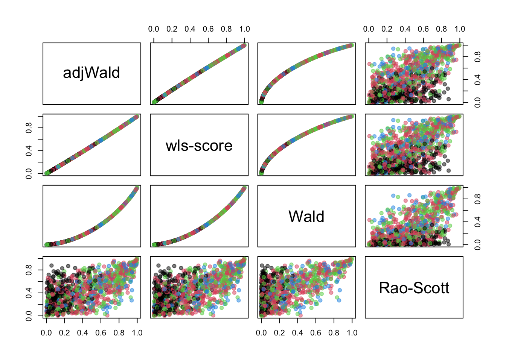

A survey package user asked me (and StackExchange) how to do tests of independence in contingency tables when there’s a zero cell in the table. I didn’t do the sensible thing and check
data(api)
dclus1<-svydesign(id=~dnum, weights=~pw, data=apiclus1, fpc=~fpc)
svytable(~sch.wide+comp.imp, dclus1) ## comp.imp
## sch.wide No Yes
## No 778.4809 0.0000
## Yes 913.8689 4501.6505svychisq(~sch.wide+comp.imp, dclus1)##
## Pearson's X^2: Rao & Scott adjustment
##
## data: svychisq(~sch.wide + comp.imp, dclus1)
## F = 236.89, ndf = 1, ddf = 14, p-value = 3.618e-10Instead, I looked at the comments and read this 2015 paper in Biometrics by Stuart Lipsitz et numerous al. The paper says
A popular test for independence for (J × K) contingency tables with complex survey data has been proposed by Rao and Scott (1981). This approach uses a design effect to adjust the usual Pearson chi-squared statistic for the complex survey design. Unfortunately, this elegant test fails to exist when one of the observed (or weighted) cells in the contingency table equals zero, because the design effect is a function of the inverse of the weighted cell counts.
Now, that’s the test in the code chunk above, so it isn’t entirely true. But it is plausible if you don’t check. It probably is true for some implementations of the Rao-Scott correction, but not the one in R and not the one in Stata. It’s also not true for the implementations in R or Stata of Wald tests for independence.
Anyway, the Lipsitz et al. approach is clever and looked useful. You expand one of the variables Y from \(n\) observations of a \(K\)-level factor to \(nK\) observations of a binary variable yind, together with a \(K\)-level factor l saying which level you’re talking about. You can fit an independence linear regression model yind~l+X and a saturated model yind~l*X and compare them with Wald test or score test. I happen to have recently implemented score tests, so this looked worth trying.
Here’s a simulation. First, simulate a population with Dirichlet-multinomial distributions for \(X\) and \(Y\) to get clustering while keeping specified marginal probabilities
set.seed(2022-4-16)
rdirichlet<-function(n,p,conc){
k<-length(p)
gammas<-matrix(rgamma(n*k,shape=p*conc),nrow=k,ncol=n)
t(gammas)/colSums(gammas)
}
library(survey)
g<-1:500
id<-rep(g,each=100)
pos<-rep(1:100,500)
p=c(.05,.4,.5)
cluster_xp<-rdirichlet(500,p,100)
x<-numeric(500*100)
for(i in 1:500){
x[(i-1)*100+1:100]<-sample(1:3,100,prob=cluster_xp[i,],replace=TRUE)
}
y<-numeric(500*100)
p=c(.1,.3,.2,.3)
cluster_yp<-rdirichlet(500,p,100)
for(i in 1:500){
y[(i-1)*100+1:100]<-sample(1:4,100,prob=cluster_yp[i,],replace=TRUE)
}
population=data.frame(X=x,Y=y,cluster=id)Now, sample 15 of 500 clusters and 20 of 100 observations in each cluster, in a way that depends on the latent Dirichlet variables. The sampling induces a strong association between \(X\) and \(Y\) and we need weighting to correct it. We compute the two Wald tests in the survey package and the Rao-Scott test and new score test, and also report the smallest cell size in the unweighted table of \(X\) and \(Y\).
results<-replicate(1000,{
psample<-(cluster_xp%*%(1:3))*(cluster_yp%*%(1:4))
p<-exp(psample)*15/sum(exp(psample))
sample_psu<-sample(g,15,prob=p)
in_sample<-(id %in% sample_psu) & (pos<20)
population$wt<-(1/p)[id]*(100/20)
the_sample<-population[in_sample,]
des<-svydesign(id=~cluster,weights=~wt,data=the_sample)
c(
adjWald=svychisq(~X+Y,des,statistic="adjWald")$p.value,
Score=svychisq(~X+Y,des,statistic="wls-score")$p.value,
Wald=svychisq(~X+Y,des,statistic="Wald")$p.value,
Rao_Scott=svychisq(~X+Y,des)$p.value,
min_cell=min(with(des$variables,table(X,Y)))
)
})
summary(t(results))## adjWald Score.p Wald Rao_Scott.X-squared
## Min. :0.002205 Min. :0.001932 Min. :0.0000337 Min. :0.0004779
## 1st Qu.:0.172342 1st Qu.:0.160374 1st Qu.:0.0391633 1st Qu.:0.2514494
## Median :0.423206 Median :0.404692 Median :0.1849786 Median :0.4520871
## Mean :0.446808 Mean :0.434284 Mean :0.2832927 Mean :0.4586632
## 3rd Qu.:0.705761 3rd Qu.:0.689953 3rd Qu.:0.4757283 3rd Qu.:0.6611491
## Max. :0.999708 Max. :0.999675 Max. :0.9991220 Max. :0.9956051
## min_cell
## Min. :0.000
## 1st Qu.:1.000
## Median :1.000
## Mean :1.318
## 3rd Qu.:2.000
## Max. :5.000This was when I eventually realised zero cells weren’t a problem – I ran the code expecting to see crashes when there were zero cells, and didn’t. Let’s have a look at the \(p\)-values, color-coded by the size of the smallest cell

The new test is almost (but not quite) identical to the existing adjWald option. It’s different from the Rao-Scott test, as would be expected. The Rao-Scott test uses the Pearson \(X^2\) test statistic applied to the estimated population table and adjusts the null reference distribution; the other tests use a different statistic. So on the one hand this is a more elegant construction of a test we already have; on the other hand it’s a more elegant construction of a test we already have. I would expect from previous simulations that the adjWald test will be anticonservative, the Wald test much more anticonservative, and the Rao-Scott test less anticonservative, and so it turns out.
The original user who asked the question turns out to have a more difficult problem: their data is sufficiently sparse that the null-hypothesis model has a singular covariance matrix and even a score test won’t work. I suppose the moral of all this is the famous advice to journalists: “if your mother tells you she loves you, ask for a minimal reproducible example.”